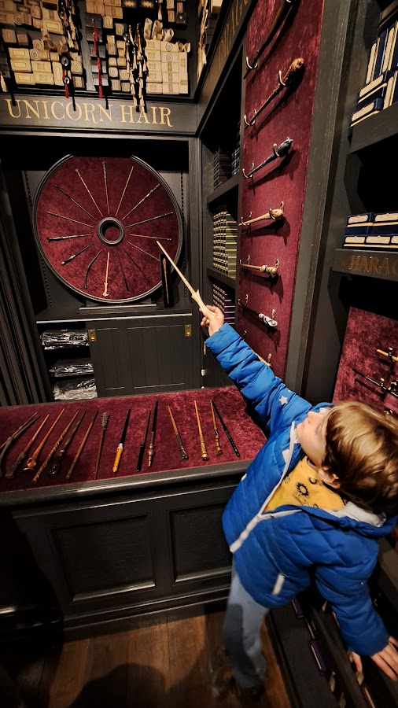

London is such a big city and it had been on my bucket list since‚Ķ forever?! So 4 days seemed like not enough but it was all I had, I used a holiday combined with some vacation days which fell right on my birthday ü•≥. That added to a super flight sale from Easy Jet made it the perfect destination for that 1st of May in 2024, for our short family ‚ÄòLondon trip‚Äô.
We were lucky with the weather, as I was prepared for lots of rain but we got mostly sunny, fresh days and we could really see and do much more then I expected. When travelling with a child I always keep expectations low and stay prepared for all types of surprises, inconveniences, delays, etc. So I didn’t plan to do too much on each day, also considering how big the city is, but in the end I was positively surprised with how much we covered. Here are some highlights of our trip.
We stayed in a budget yet nice hotel very close to the Big Ben and other big attractions which we could reach by foot. This chain, Premier Inn, was not to find on the regular platforms I normally use like Booking and Airbnb, but it was the best deal by far, so I booked directly with them. They have locations all over London and prices vary, check their website for all the options. If you plan on saving it is totally fine to book a hotel further away from the main attractions because public transportation works really well.
The famous red bus crossing Tower BridgeOn the first day we decided to walk to the Big Ben, taking a stroll close to the river and stopping for coffee and some delicious cinnamon rolls on the way. I loved the feeling of the bustling city, with all the types of cool, different people and I didn’t mind that everyone seemed to be in a rush. That might be because I live in such a small town now, but I have previously lived in quite big cities like São Paulo and New York, so I enjoy the feeling of sometimes being back in a metropole - would not want to live in one once again though!
After checking the Big Ben and taking in all the famous sights - there is a feeling of Deja Vu even if you've never been here, cause of all the movies and TV shows that we watch since we're kids so it is quite magical -- my son of course was interested in the Shrek Museum, the Aquarium and the Big Wheel (London Eye), which are all close to each other and to the Big Ben itself, but I read that those were “tourist traps” and convinced him it would be more fun to take the metro and see other parts of the city. We walked up to Westminster Abbey and there was a big public demonstration with thousands on the streets which made it impossible to keep walking anyway, so we took the metro and headed to the National History Museum. Plus, it was starting to rain…
Checking out skeletons at the National History MuseumThis place is so big and impressive for people at any age, but for kids the highlights are the dinosaurs - including a moving replica of a Tyrannosaurus Rex and skeletons of many species. Also interesting is the huge Wale Skeleton hanging from the ceiling in the middle of the main Hall and the are with sea mammals. We had lunch at the restaurant on the lower floor wich was all decorated with Dino Themes and had a good Kid’s Menu. Anyone can spend a whole day here and still not see enough in case they want to see everything. We just chose some most interesting parts, enjoyed it and kept moving.
We thought we would take the metro back to the hotel, but the sun was shining again and my son had energy after getting some Dino Jelly Beans from the gift shop so we decided to walk all the way to Buckingham Palace. I remember thinking all the time “this is quite a cool city”… In those neighbourhoods we went by at least, there was always something that caught the eye, always something to see. The Palace itself is beautiful with a big garden in front. We didn’t take any tours or went inside it, but if you are interested tours can be booked on their website
Buckingham Palace: not too crowded since we came at the end of the afternoonThe second day happened to be my birthday and we chose a special place to eat: a restaurant called Sushi Samba Which mixes Peruvian, Brazilian and Japanese food in a beautiful Ambiance with a nice city view. As dessert we got a complimentary mini cupcake with a candle so we could sing and celebrate. The food was delicious although as expected the portions was small and the price very salty, but all in all a great experience.
Little surprise after lunchA place I had planned to go because of my kid was the London Transport Museum, I read many reviews saying it was one of the best museums for kids and indeed we spent many hours there and my son loved it. There are all types of vehicles to see and climb upon, we could enter a wagon of a very old-fashioned train (but unfortunately on some of the big vehicles it was forbidden to get in), after waiting a bit in line my son got to pretend to be a bus driver on an actual bus and there were lots of interactive parts with fun and informative things for kids and adults as well. It is a place that - for the ones going to London with kids - I definitely recommend.
Being a bus driver for a day (or a few minutes)After the museum and having lunch we took the metro to see the Harry Potter shop which is located in an actual Train Station - called King’s Cross - between platforms 9 & 10, the Platform 9 3/4. The line to take a picture pretending to cross the wall like in the movie was soooo huge that we just went inside the shop instead - and for that there was a long line too! I don’t think you can avoid it any time of the year though, maybe if you arrive reeeeally early.
The shop was packed but it was cool to be able to see (and buy) so many souvenirs related to the movie and play around with the “magic Wands”. If you are a big movie fan or you are passing by anyways it is worth it, otherwise you might wanna skip this attraction. For the actual huge fans of Harry Potter there is another tour though - which we didn’t take - where you actually get to visit the studios where the movie was filmed. It is far away from the city and most people book the tour together with transportation but you can also get there by public transportation, check their website for more infos and remember to book way in advance.
 Testing Magic WandsTo close the day we took the 25-min walk from King’s Cross to Camden Market and got to see a totally different London. The Market sells all types of food, drinks and clothes, souvenirs, but the best thing is that it is very close to the canal. The sun was shining again so we walked all along the canals and it was an evident contrast to feel the difference: the busy market x the calm alleys right by the river. This mix and possibility of finding completely different worlds at every corner is what I find fascinating in cities like London. My favourite thing during this walk was the little library boat we saw right by the canal as well.
On the next day we were still lucky with the weather and walked all the way to Bankside. My son sometimes would stop and complain and say his legs hurt so much and so on, but just the sight of a candy / ice-cream shop would make him fully recharged and suddenly he could run faster than a marathon runner, so yeah… Kids!
This is more of a “Businnes-looking-Manhattan-style” part of town. We walked past the tall building up to the Tower Bridge - not to mistake with the London Bridge which is close by but much less spectacular. And once there we just wanted to admire the beauty for quite a long time. We then bought lunch at one of the many restaurants full of busy people on their lunch breaks and enjoyed it sitting outside (did I say we were really lucky with the weather?) while admiring the river and views… Recharged, we decided to cross the Tower Bridge so we could have also a view from the other side and admire the details of it from close by. Once on the other side we passed by the Tower of London. We did not want to enter any of these places but is is possible to book tickets if you want to go inside the bridge or the tower.
The entrance of London Bridge StationThis is more of a “Businnes-looking-Manhattan-style” part of town. We walked past the tall building up to the Tower Bridge - not to mistake with the London Bridge which is close by but much less spectacular. And once there we just wanted to admire the beauty for quite a long time. We then bought lunch at one of the many restaurants full of busy people on their lunch breaks and enjoyed it sitting outside (did I say we were really lucky with the weather?) while admiring the river Thames, the people. the views… Recharged, we decided to cross the Tower Bridge so we could have also a view from the other side and admire the details of it from close by. Once on the other side we passed by the Tower of London. We did not want to enter any of these places but is is possible to book tickets if you want to go inside thebridge or the tower.
This view needs no captionAfter all the walking we stopped for some coffee and shopping at the other side of the bridge and then decided to keep walking all the way to the famous St. Paul Cathedral. This was not the most “child-friendly” stop on the list, I admit, but I really wanted to see the Cathedral. We walked a LOT that day and of course if you are with kids it might make more sense to take the metro, which is fast, easy and uncomplicated (you just scan your credit card to enter and it costs about 1,50 pounds valid for more than an hour, meaning you can hop in and off also a few times in that period)* but we decided to walk so we could also see more of the city.
The St. Paul Cathedral did not disappoint. Right in front of it there was a small garden with soft grass and flowers to just sit down and relax which was very welcome. So my son could rest, we had a little picnic and enjoyed the view before deciding to take the metro to Hyde Park.
St. Paul Cathedral, specially beautiful in SpringHyde Park is huge, we did not get to see all of it. But we enjoyed a beautiful afternoon watching the friendly squirrels, seeing the fountains, flowers and my son spent his last energies running with his 2nd-degree-cousin (who lives in London and was so kind to show us a lot of the city and give us great tips on what to do and see, thanks Jimena!).
Hyde Park is huge, we did not get to see all of it. But we enjoyed a beautiful afternoon playing the courious squirrels, seeing the fountains, flowers and my son spent his last energies running with his 2nd-degree-cousin (who lives in London and was so kind to show us a lot of the city and give us great tips on what to do and see, thanks Jimena!). At the end of the day we still went to some of the souvenir shops and stores that are around the park, grabbed something to eat and headed to the hotel, pretty tired but happy to have enjoyed so much and looking forward to the last full day of fun!
Hello, there!On the last day we first went to Borough Market, which is a very busy street market with stalls selling food from all over the world. It was quite busy and there were lines for everything but we managed to get a table and eat some Paella on the Spanish stand. We also tried some Colombian Empanadas, bought some fruit and then moved on. I think it is worth it to pass by and see all the stand if you are into food and do not mind the crawls, but also because it is a quite historic market, one of the oldest and biggest in the city. It is closed on Mondays and open the other days of the week, including weekends*.
Our next stop was Tate Modern, a museum and art centre with free entry and very interesting permanent exhibitions. The highlight was the kids-friendly part where the kids could create their own art work on a type of computer that would then project the finished art work on a Wall in front of it, like a Gallery. My son spent a long time playing with this while we relaxed on the comfy seats in front (there was free Wifi as well)!
Exhibition at Tate ModernLast but not least we headed to the huge, fascinating and also free (!!) British Museum. As with other major museums it is too big to see it all and we only had a few hours until it closed so we chose our favourite parts and enjoyed them with calm. My son was interested in Egypt and mummies so we spent quite a lot of time on that section. There is just so much to see that I recommend you check their website and plan your visit in advance. Also keep in mind that although entrance is free you need a ticket, which you can reserve online. I am so happy we did because the line was huge and we just passed by everyone and entered directly cause we had the ticket in the phone, there is a separate line if you reserved yours online and then they just get scanned and you’re ready to go! Do not skip this step or it might spoil your day.
the Entrance at the British MuseumSince our flight left very early the next day we spent our last night at Premier Inn Gatwick, just because it was so close to the airport. There I had such a delicious fish and chips plate for dinner that I will never forget it — it was huge too! I didn’t write much about food on this post but as you may know it is possible to write a whole book only about eating out in London. Travelling with a 6-year-old who is a bit picky, that was not our priority though, and sometimes we just bought food at the supermarket and had a picnic or ate at the restaurant that was right in front of the hotel for convenience. I am sure that anyone will find more than enough options to satisfy all their cravings when it comes to eating out in this city though!
Goodbye, London!